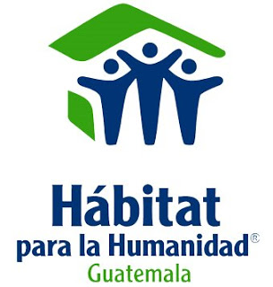

La Asociación Huehueteca Ixmucané es una asociación civil no lucrativa que desarrolla su trabajo, principalmente, en el Departamento de Huehuetenango desde diciembre del 2000. Se rige por una serie de valores y principios que parten de la solidaridad social como punto de referencia para participar en la construcción de una sociedad más justa.
Sus valores se basan en el respeto a las diferencias y a la diversidad cultural; la responsabilidad, la transparencia, honestidad, trabajo colectivo y cooperación.
MISIóN
Somos una organización civil que se dedica a la formación integral de las mujeres mayas y no mayas excluidas de las diferentes regiones y comunidades lingüísticas de Huehuetenango, brindando los conocimientos y herramientas, necesarios para la construcción del desarrollo humano integral, a través de procesos de educación formal y no formal.
A Dios, por amor al prójimo” es el grito de Caritas de Guatemala, que nace en 1962 y constituye una fundación, caritativa, apolítica y no lucrativa. Está compuesta por dos arquidiócesis, once diócesis, dos vicariatos apostólicos y una prelatura (Esquipulas). Junto a las otras Caritas del área centroamericana hace parte de la zona Camex.
De acuerdo al Plan Estratégico, las Caritas de esta nación centroamericana definieron cinco ejes temáticos y tres transversales. Sus ejes temáticos siguen siendo a la fecha: Justicia, Reconciliación y Paz, Migración y Trata de Personas, Medio Ambiente, Gestión de Riesgo y Emergencias, Desarrollo Humano Integral y Solidario, Fortalecimiento Institucional. Sus ejes transversales son: Género, Comunicación y Participación Ciudadana e Incidencia Política.
A Dios, por amor al prójimo” es el grito de Caritas de Guatemala, que nace en 1962 y constituye una fundación, caritativa, apolítica y no lucrativa. Está compuesta por dos arquidiócesis, once diócesis, dos vicariatos apostólicos y una prelatura (Esquipulas)

Hábitat para la Humanidad Guatemala (HpHG) es organización no gubernamental sin ánimo de lucro fundada en 1979, hace parte de la organización internacional Habitat for Humanity, con presencia en 16 países de América Latina y el Caribe. El objetivo de la organización es que las personas tengan un lugar adecuado donde vivir.
El pasado 9 de abril se llevó a cabo la firma de convenios con Guatemala Green Building Council - GGBC y Good Neighbors Guatemala, con el objetivo de impulsar la implementación de soluciones integrales que mejoren la salud de las familias guatemaltecas.
Invitamos a todos aquellos que se quieran sumar a mejorar las condiciones de vida de más familias guatemaltecas. – Víctor Velásquez, Director Nacional
Hábitat para la Humanidad Guatemala
El objetivo de la organización es que las personas tengan un lugar adecuado donde vivir.
Internacional Habitat for Humanity, con presencia en 16 países de América Latina y el Caribe.